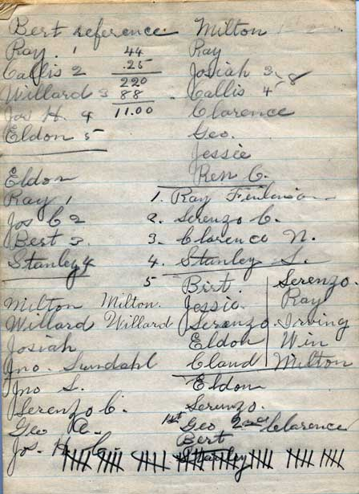

One of the purposes of this work is so that those people who descended from the members of this young men and young ladies group may enjoy seeing what their ancestors did in their mutual activities.
You can see the actual pages by clicking -->here.
Here is a picture of the Oak City Choir, taken at about this same time. There are quite a few of the people identified in the minutes that are also in this picture. The director, Eddy Q. Dutson, is also mentioned once in the minutes.
(Minutes start on February 15th, 1903)
Oak City Feb 15th 1903
The young Men's Mutual met with the young ladies conjointly for devotional exercises.
First counselor Lee Anderson in charge.
Choir sang - Lo the Mighty God appering etc.
Prayer was offered by Jesse Anderson
Choir sang - Come, Come ye Saints.
young ladies marched unto the adjoining room
Roll was called and minutes of last meeting read and approved.
The subject before the class was - Practical Religion (continued)
1st. Leo Lyman gave a lecture, subject - Man's Duty to man - love of man
2nd Edward Christensen spoke on Man's Duty to his family 4th and 5th notes
3rd Edgar Nielson Discussed 6th and 7th notes.
4th Class teacher Edward Lyman asked questions on the lesson and they were answered by the members.
Young ladies return for closing exercises
1st F. R. Lyman gave a song.
2nd Ray Finlinson gave a reading
3rd Elizabeth Christensen and Co. sang a song
Choir sang - Praise to the man who communed with Jehovah.
Dismissal prayer by Maggie Jacobson
Oak City Feb 22nd 1903
The young Mens Mutual met with the young ladies conjointly for devotional exercises.
First Counselor Lee Anderson in charge
Choir sang - High on the mountain tops, etc.
Opening prayer was offered by Able M. Roper
Choir sang - The mighty God appearing
Young ladies marched into the adjoining room.
Roll was called and minutes of the last meeting read and approved.
The subject before the class was Practical Religion (continued)
1st Soren Anderson Anderson gave a lecture on man's Duty to the church.
2nd Joseph S. Anderson gave a lecture on Tithes and offerings
Respect for Authority
3rd First counselor asked questions on the lesson and the were answered by the members.
Program was read for next meeting
Young ladies return for closing exercises.
1st William Walker gave a reading. Tittle - God is Omnipresent
2nd Eliza and Maggie Rawlinson sang a song
Choir sang - Arise O Glorious Zion
Dismissal prayer by Hancina Nielson
Oak City March 8th 1903
The young Men's Mutual met with the young ladies conjointly for devotional exercises.
Pres. Geo E Finlinson in charge.
Choir sang - Come listen to the prophets voice.
Opening prayer was offered by Joshua Finlinson
Choir sang - Guide us O thou great Jehovah, etc.
Young ladies marched into the adjoining room.
Roll was called and minutes of last meeting read and approved.
The subject before the class was - Rewards and punishments
1st Joseph L. Anderson gave a lecture. Subject. Effects of Conduct, Good and Bad
2nd John Nielson discussed Places of Rewards and Punishments
3rd Class teacher Edward Lyman asked questions on the lesson and they were answered by the members.
Program was read for next meeting.
Young ladies returned for closing exercises.
1st Lee Anderson gave a reading. Tittle - Life's Mission
2nd Lem Roper gave harmonica music
3rd Ida Jacobson gave a reading
4th Edgar Nielson gave the current events
Choir sang - Come all ye sons of Zion, etc.
Dismissal prayer by Celia Sheya
Oak City Mar. 15th 1903
The young Men's Mutual met with the young ladies for conjointly devotional exercises.
Pres. Geo. E. Finlinson presiding.
Choir sang - O the mountains high.
Prayer was offered by Martha Roper
Choir sang - Though in the outward church below.
Young ladies marched into the adjoining room.
Roll was called and minutes of last meeting read and approved.
Subject before the clas was Church Organization (continued)
1st Edward Christensen lectured on the 1st and 2nd notes of Forms and ceremonies
2nd John Lundahl gave a lecture on Confirmation and Sacrament.
3rd Ray Finlinson gave a lecture subject Ordination and Blessing of Children
4th Freddie Lyman discussed consecration of Oil and Administration of the sick.
5th John E. Lovell lectured on Temple Ordinances
6th Class teacher Edward Lyman asked questions on the lesson and they were answered by the members.
Young ladies returned for closing exercises.
1st Jense Anderson gave a reading, tittle - God's Omnipresence
2nd Ida Roper and Leo sang a song
3rd Mary M. Lyman gave a reading
4th Joseph H. Christensen gave harmonica music
Program wa read for next meeting. Choir sang - Lo the Mighty God appearing.
Dismissal prayer by Edgar Nielson
Oak City Mar 22nd 1903
The young Mens Mutual met in conjoint session with the young ladies.
Pres. Geo E. Finslinson in charge.
Choir sang - How firm a foundation ye Saints of the Lord
Opening prayer was offered by Nielse Christensen
Choir sang - High on the mointain tops
Young men's Rolle was called and minutes of last meeting read and approved.
Young ladies Roll wase called and minutes of last meeting read and approved.
The subject discussed before the Mutual was - Practical Religion (continued)
1st Eddie Dutson gave a lecture subject Mans Duty to Man - Love of Man
2nd Maggie Jacobson gave a lecture subject - Love to the family
3rd Class teacher Edward Lyman asked questions on the lesson and they were answered by the members.
4th Hancina Nielson and Co. sang a song
5th Peter Nielson gave a reading from the Era, tittle, Relation of habits to Character
6th Soren Anderson sang a song.
7th Pres. Mary M. Lyman gave the current Events
Program was read for next meeting.
Choir sang - Praise ye the Lord, etc.
Dismissal prayer by Alice Anderson
Oak City Mar 29th 1903
The Young Mens Mutual met in conjoint testimony meeting with the young ladies.
First counselor Lee Anderson presiding.
Choir sang - The morning breaks the shadows flee, etc.
Opening prayer was offered by Jense Anderson.
Choir sang - "Stars of morning shout for joy"
Young Men's Roll was called and minuits of last meeting was read and approved.
the meeting was turned over to testimony bearing, the following brethren and sister bore their testimony's
Lee Anderson
Mary M. Lyman
Joseph Finlinson
Leo Lyman
Ida Jacobson
Soren Anderson
F. R. Lyman
William Jacobson
Edward Lyman
Annie L. Anderson
Eddie Dutson
John Lovell
Joshua Finlinson
Mary Finlinson
Edward Christensen
Peter Nielson
Anthone Christensen
Jense Anderson
Edgar Nielson
Maggie Jacobson
Joseph H. Christensen
Lorenzo Christensen
John Talbot
Ida Roper
Alice Anderson
1st William Jacobson and Co. gave a trio
2nd Joshua Finlinson gave a reading from the Era
3rd Rachel Nielson and Co. sang a song
4th Ely Anderson gave the current Events
Choir sang "Arise O glorious Zion"
Dismissal prayer by Elizabeth Christensen
Oak City May 3rd 1903 [ there were no minutes for intervening weeks]
The Young Men's and Young ladies met in conjoint meeting
Pres. Geo E. Finlinson presiding
Choir sang -"Arise O Glorious Zion"
Prayer was offered by John Nielson
Choir sang -High of the mountain tops. etc.
The Young Men's Roll was call and minutes of last meeting read and approved.
The young ladies roll was then called.
The rpogram was as follows
1st F. R. Lyman gave a lecture on How to keep well in hot weather
2nd Ely Anderson and Co. sang a song
3rd Pres. Geo E. Finlinson gave a reading from the Era tittle The late Pres. Brigham Young.
4th Leo Finlinson gave a guitar selection
Bishop Hinckley of Deseret spoke stating that he was pleased with the exercises in that we should shun evil and strive to posess good habits that we may live useful lives.
Choir sang-"Lo the mighy God appearing."
Dismissal prayer by Ida Jacobson
Oak City June 6th 1903
The Young Men's Mutual met in conjoint session with the young ladies.
Pres Geo. E. Finlinson in charge
Choir sang - Guide us O thou great Gehovah
Opening prayer was offered Lorenzo Lovell
Choir sang - Redeemer of Israel, our only delight
Young Mens Roll was called and minutes of last meeting read and approved.
The Young ladies roll was then called.
The following program was rendered.
1st Ida Jacobson gave a lecture subject Social Recreation
2nd Soren Anderson sang a song.
3rd Pres. mary M. Lyman gave a recitation.
4th Joshua Finlinson gave a reading Entittled Reward of delidigence
5th Soren Rawlinson gave Harmonica music
Bro. F. R. Lyman gave a report of the late officers conference held in Salt Lake City
Choir sang -"America"
Dismissal prayer by Ely Anderson

Back of last page, tallying of some sort
{kind=link}